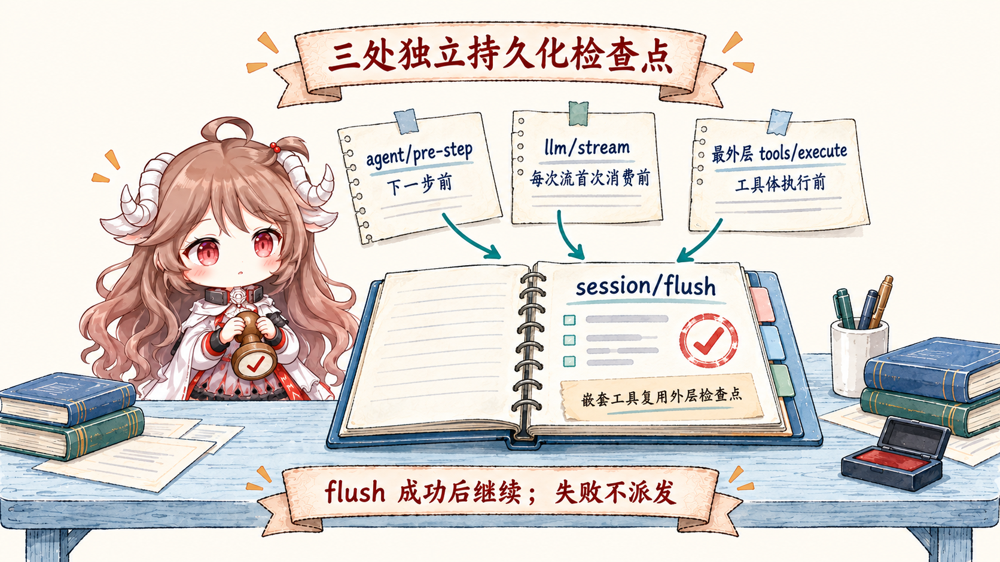
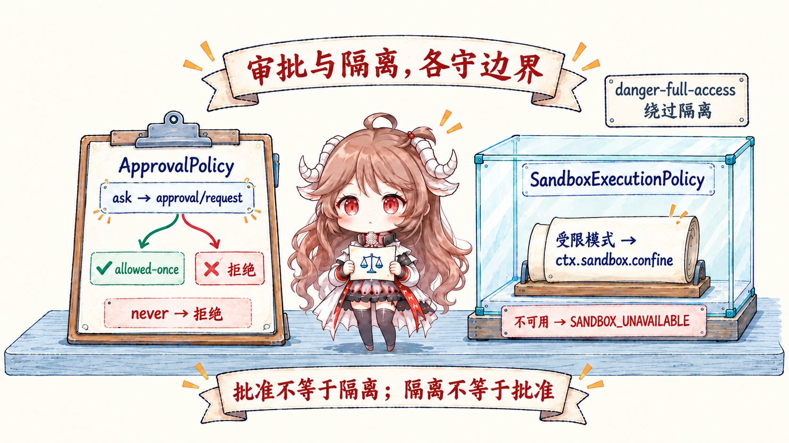
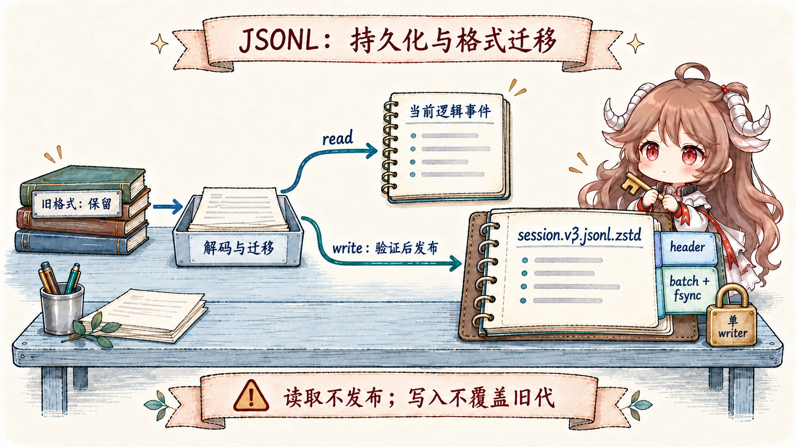
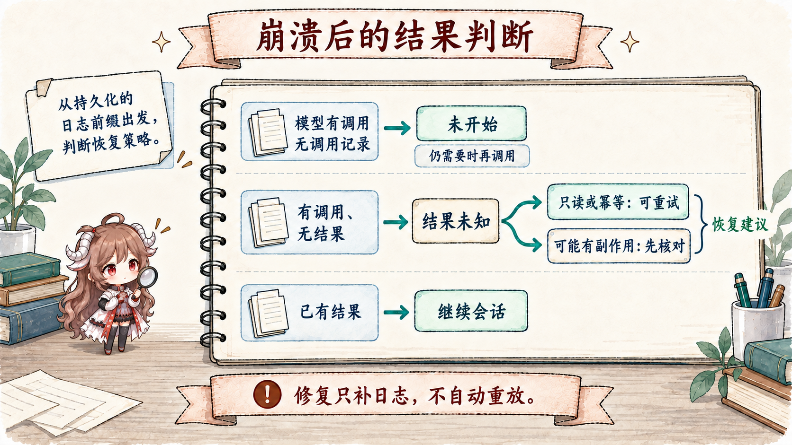

工具调用最危险的错觉，是把 await tool.execute() 当作唯一事实。一条付款、发信或改文件操作至少有四个时刻：模型产生调用；runtime 持久化“准备调用”；外部世界接收动作；runtime 持久化结果。进程可以在任意相邻时刻之间退出，这些空隙决定了恢复时能不能自动重试。
DSH 没有承诺 exactly-once。它做的事情更诚实：用 SessionEvent 保存意图和结果，用 checkpoint policy 在副作用前强制 durability，用 approval 与 sandbox 分别管理授权和执行边界，再用 repair 把崩溃尾部分类为“未开始”或“结果未知”。
阅读契约。读完以后，你应该能回答：为什么 durable tool/call 必须早于工具体；为什么 append() 不等于落盘；ask、never 和 allowed-once 分别在哪里生效；approval 为什么不能代替 sandbox；以及为什么看到 TOOL_OUTCOME_UNKNOWN 时绝不能盲目重放副作用。
证据边界。本文固定在提交 ddefc45。第一方 JSONL persistence 和 checkpoint policy 可以组成本文的 durability 路径；自定义 backend、answerer、sandbox provider 与第三方工具仍须各自兑现接口。源码没有把它们自动变成事务系统。
一、先记录调用，再允许执行
1.1 assistant message 和 tool/call 是两份不同证据
Agent loop 先把含有 tool calls 的 assistant message 追加到 Session。随后 executeToolCalls() 为每一项追加 tool/call 事件，再进入 prepare 与 guard；真正的工具体拿到控制权前，tools/execute checkpoint 才把这段前缀变成 durable。settlement 完成后，结果再作为 tool/result 进入同一个事件源。
assistant message 保存模型提议，tool/call 则记录调度器开始处理的调用；其日志字段仍保留原始参数字符串，解析后的参数进入工具执行上下文。工具体只能在 flush 成功后运行，但后台批处理也可能更早落盘，所以 durable call 不证明工具已经开始。它只要求恢复端保守地承认：动作可能已经发生。

1.2 工具管线保留一个不可绕过的顺序
tools runtime 先运行 tools/pre-execute waterfall。gate 可以返回 allow、deny、ask 或 cancel；approval seam 把交互结果收敛为 allowed-once、rejected、cancelled 或 unavailable。pre-execute 之后还有 monotonic guard，确保较弱的后续决策不能把已关闭的门重新打开。只有通过后才进入 tools/execute，最后运行 post hook。
Checkpoint policy 只拦最外层调用：exec.agent 已定义且 exec.parent 未定义。嵌套 dispatch 复用外层已经建立的 checkpoint，避免每一层都重复 flush，也避免子工具绕开最外层的事实边界。
ctx.on('tools/execute', async (exec, next) => {
if (exec.agent === undefined || exec.parent !== undefined) return next()
await ctx.sessions.flush(exec.agent.session)
if (exec.signal.aborted) return abortedBeforeDispatchResult()
return next()
})二、append 不等于 durable
2.1 Persistence backend 和 checkpoint policy 是两层能力
Session 的 append() 建立内存中的原子事件提交；persistence plugin 可以 write-behind。两者解耦让不同 backend 自由批处理，但也意味着“日志数组里已经看见”并不代表 crash 后还能读到。session-checkpoint-policy 单独定义语义 checkpoint：继续下游之前，哪些先前事件必须跨过存储边界。
2.2 三个 barrier 分别保护三种不可逆前进
agent/pre-step：开始下一推理 step 之前，上一阶段事实先 durable。- 关联有效 Session 的每次
llm/stream：返回的流首次被消费时，真正向 provider 发请求前才 lazy flush，避免没有网络动作时的无谓同步。 - 最外层
tools/execute：工具体看到控制权前，含tool/call的前缀必须 durable。
session/flush 在下游 adapter 或工具体之前完成；失败时 fail closed。若等待 flush 时取消，policy 返回 ABORTED_BEFORE_DISPATCH，而不是假装工具已经运行。这个顺序使“durable call 但无 result”具有稳定含义。
三、Approval 和 sandbox 解决不同问题
3.1 Approval 决定“这一次是否允许”
user-approval 提供 channel-neutral 的一次性请求 ctx.approval.request(req)。ApprovalPolicy 只有 ask 与 never：ask 才会派发 approval/request；never 在交互前直接拒绝。请求必须处于开放 turn 内；approval/asked 与 approval/decided 成对记录审计。模型不读取这两条事件，但能看到工具结果，以及追加到保留历史之后的当前策略快照。
缺少 answerer、answerer 抛错、请求被取消都 fail closed。策略也可由日志中的 approval/policy 覆盖，最后一条事件胜出。审计 append 失败会使请求拒绝，不能返回一项未记录的授权。策略切换也会为下一步追加来源明确的通知，而不是重写稳定的请求前缀。这个 seam 没有内置 answerer、没有“永久允许”，请求也不携带完整工具参数；它刻意保持窄而可审计。
3.2 Sandbox 决定“即使允许，也只能怎样执行”

SandboxProvider 支持 read-only 与 workspace-write 的受限执行；ctx.sandbox.confine(argv, policy) 返回包装后的 argv 和执行完整度。没有可用 backend 时以 SANDBOX_UNAVAILABLE 拒绝。danger-full-access 则明确绕过隔离，由调用方执行原 argv；它不是一种被 sandbox 保护的模式。
本地 provider 在 Linux 优先 bubblewrap、再尝试 Landlock；macOS 使用 Seatbelt；Windows 使用 ACL/restricted-token 路径，Windows 与 Landlock 可能报告 partial。它限制的是同一宿主世界中的文件副作用，不是 container 或 microVM。用户点了允许，不代表命令获得无限系统权限；命令被 sandbox 包住，也不代表用户已经授权。
四、JSONL 怎样把 checkpoint 变成可恢复前缀
4.1 一帧 header，一帧 durable batch

JSONL backend 当前写 session.v3.jsonl.zstd，旧 v0 文件才叫 session.jsonl.zstd。每代仍由一个独立校验的 header frame 加多个 durable batch frame 构成，也可选 raw JSONL。存储 handle 持有写入序列与 live-event buffer：内部固定的 200ms 窗口合并事件（不再是配置项），session/flush 绕过窗口并排空后端；这不是 append 到内存时就完成 fsync。
4.2 首次发布、追加失败和 torn tail 都有明确边界
create(header) 先返回写 handle，不立即建文件；首次 append 将 header 与事件写进临时文件并 fsync。显式 flush 一个空 session 也会发布只有 header 的文件。POSIX 用不覆盖目标的 hard link 发布并 fsync 父目录，Windows 走 write-through rename；后续追加各自 fsync，捕获写入或同步错误后 truncate 回原长度。
读取时保留 torn final frame 中完整解码的 records；写 handle 在下一批写入前截断 torn bytes 并把这些 records 持久化重写，resume 再追加必要的合成 closers。完整 frame 的校验、解压或结构损坏会拒绝恢复。写 handle 在进程内独占，跨实例和进程还有内核锁：POSIX 使用 session.lock 上的 flock，Windows 使用命名 semaphore；锁持有进程退出后释放，活着但卡住的进程仍阻止第二个 writer。
4.3 读取旧格式与发布新格式是两件事
迁移发布路径选择编号最高的 canonical generation。open(id, 'read') 可把支持的旧格式解码、迁移并验证成当前逻辑事件，但不发布新文件；open(id, 'write') 才编码同目录临时文件，经过 Worker Thread 验证和来源 revision 复核后，无覆盖地发布当前 generation。旧文件逐字节保留；来源发生变化时拒绝这次发布，不拿旧准备结果覆盖新历史。
因此 session.v3.jsonl.zstd 是当前写目标，旧代是迁移证据，不能理解成可随意回退的副本。迁移保留配置的压缩方式，不提供 zstd/raw 自动转换；后端也不负责删除会话文件。
五、Crash repair 必须区分未开始与结果未知
5.1 日志前缀提供恢复判断的证据

| 崩溃前 durable 前缀 | 修复结果 | 恢复建议 |
|---|---|---|
assistant 含 tool call；没有 tool/call | TOOL_NOT_STARTED | 确认仍有需要后可重新 dispatch |
有 tool/call；没有 tool/result | TOOL_OUTCOME_UNKNOWN | 只读或幂等时可重试；否则先查询外部状态或询问用户 |
tool/call 与 tool/result 都在 | 正常完成前缀 | 从下一步 resume |
repair.ts 会合成必要的 tool result、step/end 与 interrupted turn/end，并保持 seq 连续。它只补齐日志，不自动重放工具，也不设置强制隔离。错误结果中的恢复建议让模型和 runtime 看见不确定性，再按工具语义决定后续动作。
5.2 callId 是幂等支点，不是 exactly-once 魔法
对有副作用的工具，DSH 建议把 exec.callId 传给支持幂等键的外部系统。这样一次未知结果可以通过查询或同键重试收敛。但如果目标系统不支持幂等、查询或事务，runtime 不能凭本地日志证明动作只发生一次。read-only 或天然幂等的调用可以更积极地恢复；付款、发信和删除必须保守。
六、这条执行路径带来的工程判断
- 第一方 durability 要同时装 backend 与 policy。只有 persistence 没有 checkpoint，副作用可能领先 durable 日志；只有 policy 没有兑现 flush 的 backend，也没有实际保护。
- Approval 不是 sandbox。前者回答“是否同意”，后者限制“能碰什么”；两道门缺一不可。
- Fail closed 是明确的可用性取舍。answerer、sandbox 或 flush 不可用时停止，会丢掉一次机会，却不会偷偷扩大权限或制造不可解释的动作。
- 未知结果按工具语义决定恢复。恢复逻辑不能用“本地没结果”推断“外部没发生”。
- 自定义工具要传播 callId。能把本地调用身份接到外部幂等键，才有机会把 at-least-once 风险收敛成可验证结果。
下一篇会处理另一个看似无害的 mutation：compaction 怎样替换模型可见 surface、裁剪旧 tool result，却仍让原始事件日志和 request header 足以重建一次请求。
参考源码
- session-checkpoint-policy README 与 实现：三个 durability checkpoint、top-level 工具边界与取消语义。
- tool-calls.ts 与 tools runtime：调用事件、gate、execute 和 result 顺序。
- user-approval README：一次性决策、审计事件与 fail-closed 结果。
- sandbox contract 与 local provider：策略模式、平台 backend 与限制。
- session-persistence-jsonl README：frame、batch、fsync、发布与 torn-tail 恢复。
- repair.ts：未闭合 tool、step 与 turn 的保守修复。